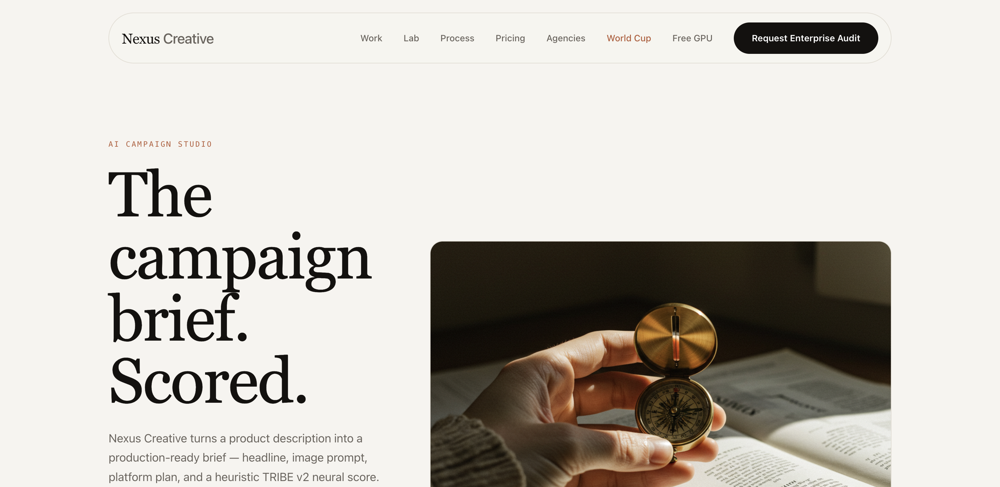
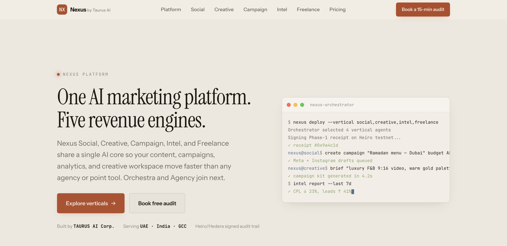
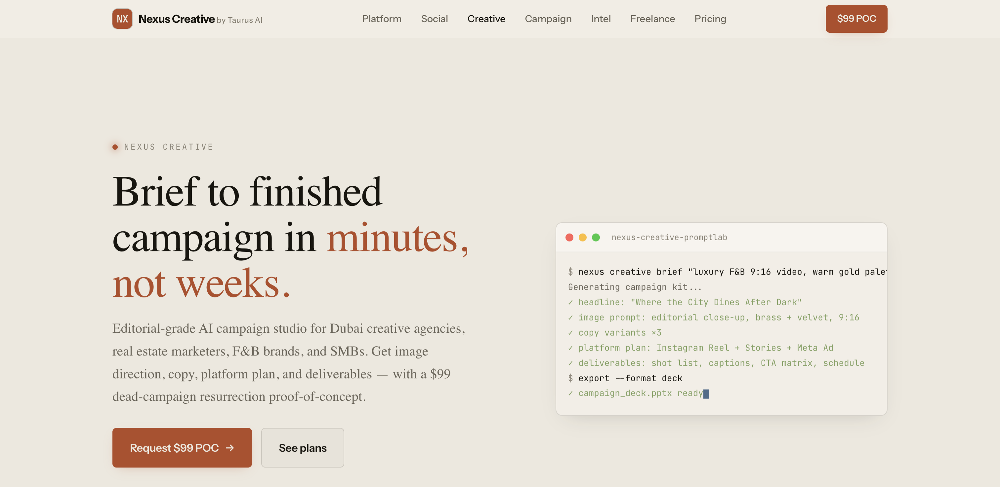
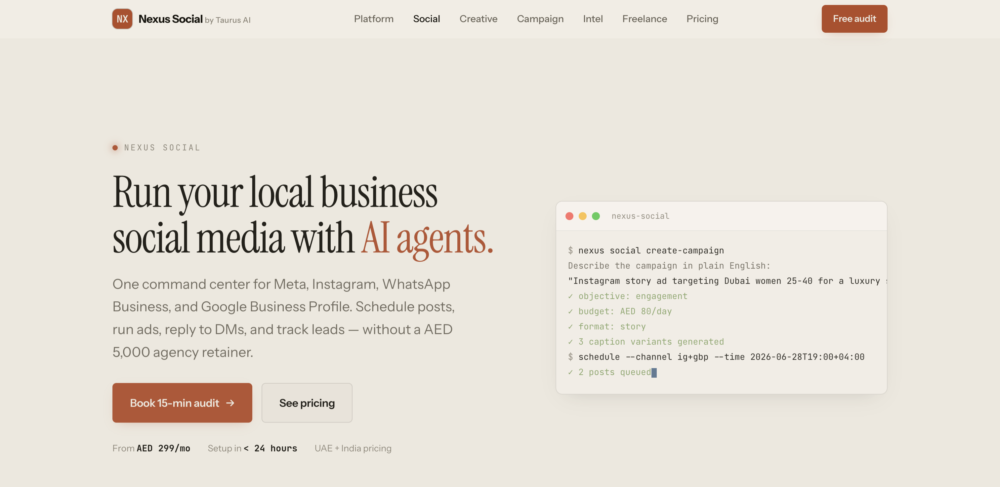
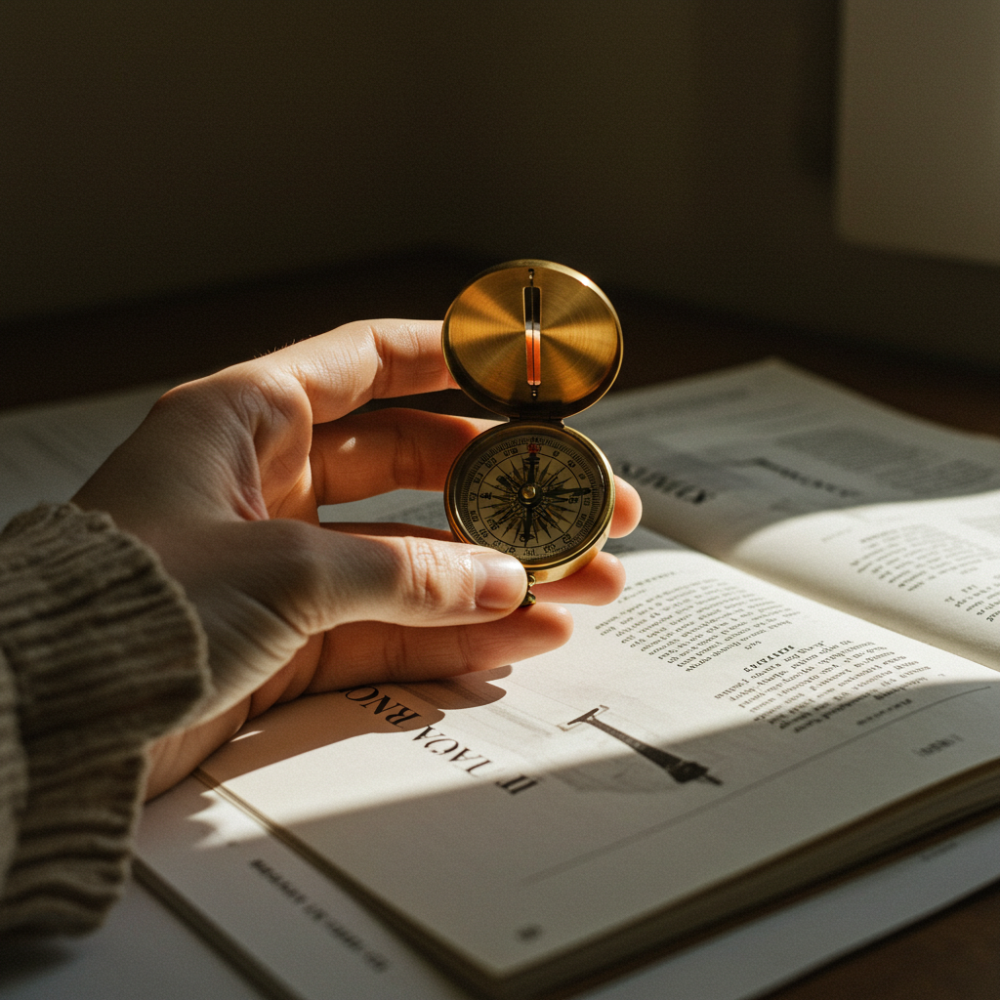
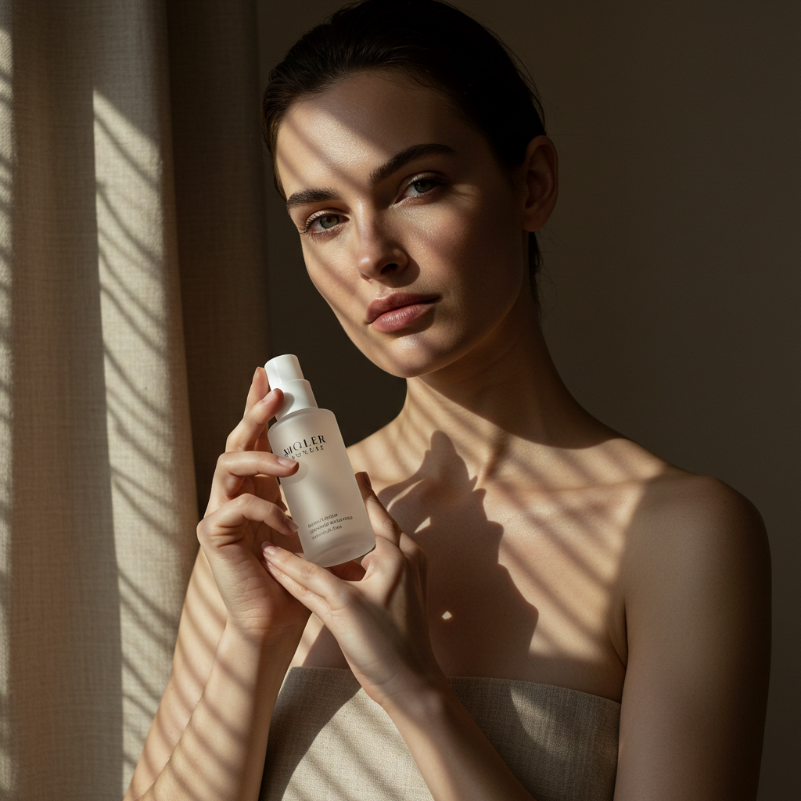
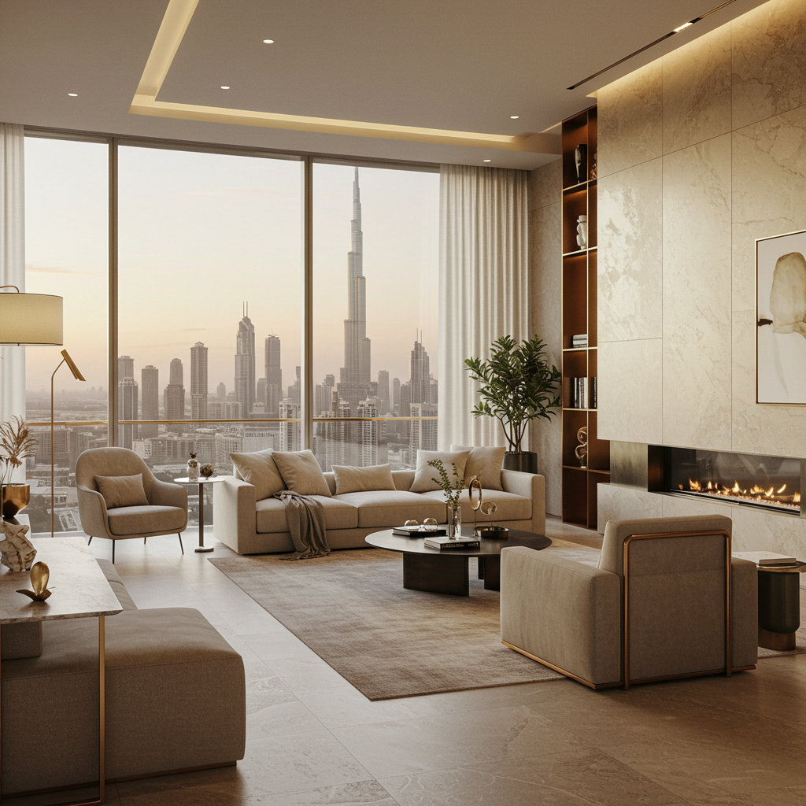

NEXUS · Design review · 24 Aug 2026
You asked what the difference is. Here it is measured, not described — screenshots from a real browser at the same viewport, and counts pulled from the source.




The nav item labelled “Campaign” is Nexus Creative. That page's own brand lockup reads Nexus Creative and its eyebrow reads AI Campaign Studio — while a separate /creative/ landing page also exists, with a different nav, different type scale and no imagery. Two pages, one product, two identities.
| Measure | /campaigns/ | / · /creative/ · /social/ | Why it matters |
|---|---|---|---|
| Real photographs | 3 | 0 | The single biggest gap. The rest of the site has no photography at all — only CSS cards and terminal mockups. |
| Hero type ceiling | 6rem | 4.1rem | The campaign hero is ~46% larger. That confidence is most of the “expensive” feeling. |
| Page weight | 68 KB | 11–16 KB | 4–6× the content. The others are skeletons. |
| Semantic sections | 8 | 0 | The others have no <section> structure — no narrative sequence to scroll through. |
| Nav pattern | Floating pill, 8 items, black CTA | Flat bar, 9 items, terracotta CTA | Two different navigation systems on one site. |
| Stylesheet | Self-contained inline | Shared design-system.css | The campaign page shares no code with the rest — it can drift independently, and has. |
| Type stack | Now identical across all — Instrument Serif / Instrument Sans / JetBrains Mono | Fixed today. It was six different stacks this morning. | |
Five campaign images sit in platform/assets/campaigns/, each with a .json sidecar carrying the original prompt, an enhanced prompt, and the provider (vertex-imagen-3). This is a working, reproducible pipeline — not stock art. Only three of the five are used anywhere.



Direction only — nothing is built yet, and I am not starting until you pick.
/creative/ becomes the marketing page; the current campaign build becomes the live demo it links to.